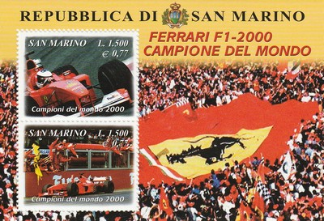
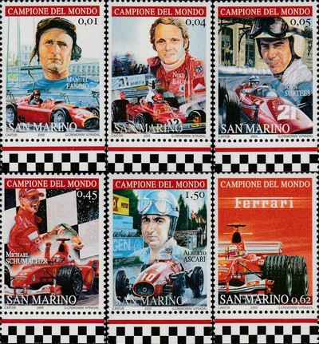
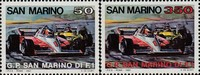
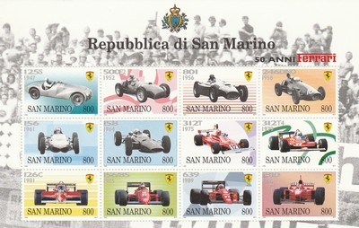
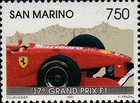
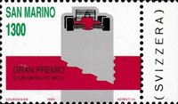
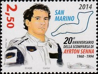

Republic of San Marino
 |
 Issue date: 2001 A 2 stamp sheet celebrating Ferrari's achievements in the 2000 F1 season. The 2000 Formula One season was the 51st FIA Formula One World Championship season. Michael Schumacher became Ferrari's first World Drivers Champion for 21 years (this was Schumacher's third World title). Schumacher clinched the drivers' title at the penultimate race of the season, the Japanese Grand Prix. Ferrari also successfully defended their constructors' title. The souvenir sheet depicts the enormous Scuderia Ferrari shield flag unfurled among the masses in Italy. The two stamps in this sheet feature Barichello and Schumacher and are also some of the first stamps to also denote their price in Euros as well as Lira.  Issue date: 2005 A six stamp set commemorating Ferrari's world champion F1 drivers. - Juan Manuel Fangio drove for Ferrari in 1956 winning the title that year. - Niki Lauda drove for Ferrari from 1974 to 1977, winning the title in 1975 and 1977. - John Surtees drove for Ferrari from 1963 to 1966, winning the title in 1964. - Michael Schumacher drove for Ferrari from 1996 to 2006, winning the title in 2000, 2001, 2002, 2003 and 2004. - Alberto Ascari drove for Ferrai from 1950 to 1953, winning the title in 1952 and 1953.  Issue date: 1983 A stamp issue to commemorate the 1983 San Marino Grand Prix. The San Marino Grand Prix was a F1 championship race which was run at the Autodromo Enzo e Dino Ferrari in the town of Imola, near the Apennine mountains in Italy, between 1981 and 2006. It is called the San Marino Grand Prix because there is already an Italian Grand Prix, and the republic of San Marino is itself too small to host a grand prix. In 1980, the Imola track was used for the 51st Italian Grand Prix. The 1983 race was won by Patrick Tambay (Ferrari), Alain Prost (Renault) was second and in third pace was Rene Arnoux (Ferrari).  Issue date: 1998 A mini sheet of 12 values commemorating Ferrari's 50 years in Formula 1 motor racing. In 1947 Ferrari constructed the 12-cylinder, 1.5 L Tipo 125, the first racing car to bear the Ferrari name. The 125 won six of its fourteen races in 1947, though drivers Clemente Biondetti and Giuseppe Navone were unable to win the 1947 Mille Miglia in it. Ferrari are the only team who have competed in every season of the Formula 1 world championship since its inception in 1950. By 1997, Ferrari had won the constructor's championship 8 times. In 1997, the Ferrari F310B with the Ferrari 046/2 3.0 V10 engine was driven by Michael Schumacher and Eddie Irvine. Both Ferrari and Schumacher came runner up in the respective championships, although Schumacher was later disqualified from the driver's championship for causing an avoidable accident.  Issue date: 1997 A single stamp issue commemorating the 17th San Marino Grand Prix. The 1997 San Marino Grand Prix was held at the Autodromo Enzo e Dino Ferrari near Imola, Italy on April 27, 1997. It was the fourth race of the 1997 season. Heinz-Harald Frentzen took his maiden F1 win driving for Williams after he held of a late charge from Michael Schumacher in the Ferrari; Schumacher came second followed by Eddie Irvine in the sister Ferrari. Gerhard Berger started his 200th grand prix, however it ended in disappointment when he spun off early on.  Issue date: 1989 A single stamp issued to commemorate the 1989 San Marino (Imola) Grand Prix. The race was won by Ayrton Senna (McLaren), 40 seconds ahead of Alain Prost in the sister McLaren. The race was red flagged (and restarted after half an hour) after Gerhard Berger (Ferrari) hit the wall at an estimated 180mph, coming off the track at the fast Tamburello corner due to mechanical failure. Berger's car burst in to flames, but he escaped with a few broken ribs and second degree burns.  Issue date: 2014 A commemorative stamp for the 20th anniversary of the death of Ayrton Senna. |